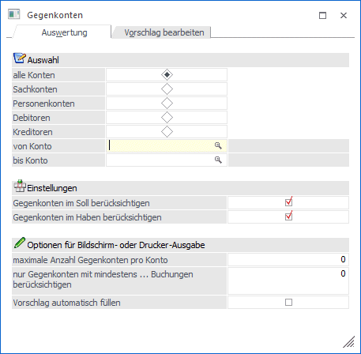
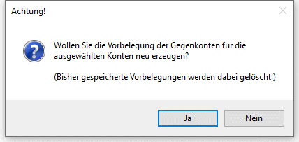
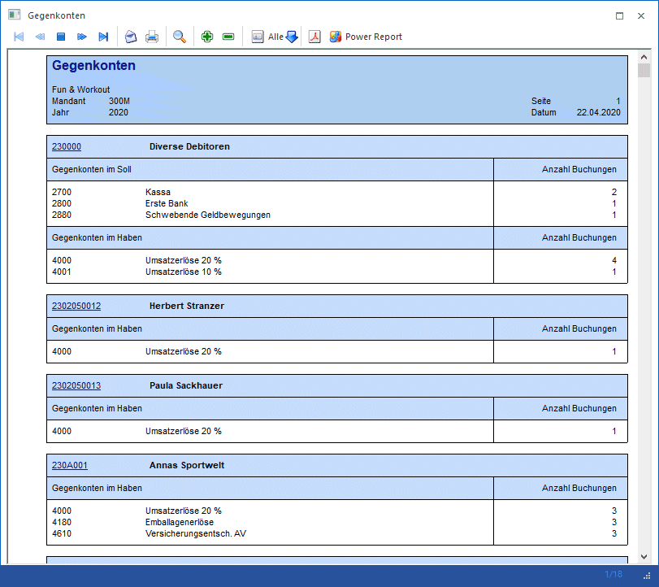
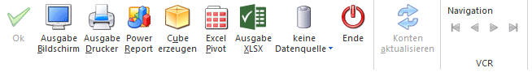
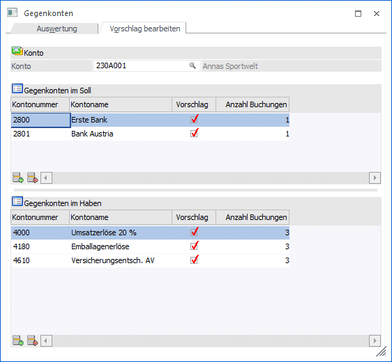
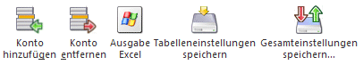
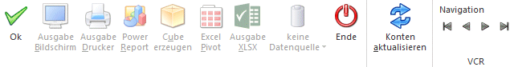

Im Menüpunkt
1 Stammdaten
1 Konten
1 Gegenkonten
können die im FIBU-Journal verwendeten Gegenkonten ausgewertet und Vorbelegungen für zukünftige Buchungen erstellt werden.
In den Buchungsprogrammen wird beim Gegenkonto sofort und automatisch eine Autosuggest-Auswahl-Liste angezeigt, in der die definierten Konten aufgelistet werden und wo das gewünschte Gegenkonto ausgewählt werden kann. Wird in dem Gegenkonto zu Tippen begonnen, wird auf die altbekannte Autovervollständigung-Funktionalität umgeschaltet und im gesamten Kontenstamm gesucht.
Mit "F3" im Gegenkonto kann der Vorschlag der Gegenkonten jederzeit aktiviert werden, d.h. auch dann, wenn bereits ein Konto eingetragen ist oder wenn bereits die Standard-Autovervollständigung aktiviert wurde.
Bei der Ausgabe der Liste werden bei der Ermittlung der Gegenkonten für jedes selektierte Konto auch Aufteilungsbuchungen (Splitbuchungen) des aktuellen Wirtschaftsjahres berücksichtigt. EB- und AB-Buchungen, Automatikbuchungen (z.B. Skonto) und Stornobuchungen sind ausgenommen.
Auswertung

Ø Auswahl Konten
Über den Radiobutton wird der Kontenbereich ausgewählt, der für die Auswertung herangezogen werden soll und im Folgefeld noch eingeschränkt werden kann.
Ø von Konto / bis Konto
Die zuvor getroffene Kontenauswahl kann hierüber eingeschränkt werden.
Ø Gegenkonten im Soll berücksichtigen
Auf der Auswertung der Gegenkonten werden für die ausgewählten Konten nur die Gegenkonten im Soll aus dem Journal ausgegeben.
Ø Gegenkonten im Haben berücksichtigen
Auf der Auswertung der Gegenkonten werden für die ausgewählten Konten nur die Gegenkonten im Haben aus dem Journal ausgegeben.
Optionen für die Bildschirm- oder Drucker-Ausgabe
Ø Maximale Anzahl Gegenkonten pro Konto
Hier kann eine Anzahl von Gegenkonten eingetragen werden, die maximal pro Konto ausgegeben werden sollen. Bei "0" werden alle Gegenkonten berücksichtigt.
Ø nur Gegenkonten mit mindestens … Buchungen berücksichtigen
Hier kann eine Mindestanzahl von Buchungen der Gegenkonten eingetragen werden, die pro Konto bei der Ausgabe berücksichtigt werden sollen. Existieren weniger Buchungen beim Gegenkonto, wird dieses nicht ausgegeben. Bei "0" werden alle Gegenkonten berücksichtigt.
Ø Vorschlag automatisch füllen
Bei einer Bildschirm- oder Drucker-Ausgabe wird aus dem Ergebnis der Auswertung ein Gegenkonten-Vorschlag jahresübergreifend erzeugt, der dann in den Buchungsprogrammen zur Verfügung steht.
Es werden nur Hauptkonten berücksichtigt, Gegenkonten für einzelne Subkonten können manuell definiert werden.
Der Vorschlag kann im dem Register "Vorschlag bearbeiten" manuell bearbeitet werden.
Vor der Erstellung der Auswertung wird nachfolgende Sicherheitsabfrage ausgegeben:


Für die Kontonummer steht in der Bildschirm-Ausgabe ein Drill-Down zur Verfügung, beim Klick darauf wird ein Cube mit allen Buchungen für das Konto angezeigt.
Buttons

Ø Ausgabe Bildschirm
Mit Hilfe des Buttons "Ausgabe Bildschirm" oder der Taste F5 wird die Auswertung am Bildschirm ausgegeben.
Ø Ausgabe Drucker
Durch Anwahl des Buttons "Ausgabe Drucker" wird die Auswertung am Drucker ausgegeben.
Ø Power Report
Durch Drücken des Buttons "Power Report" wird die Auswertung auf Basis von Cube-Daten grafisch dargestellt. Die Ausgabe ist individuell anpassbar und erfolgt in der Form von "Widgets", die unterschiedlichste Darstellungen ermöglichen.
Ø Cube erzeugen
Wenn die Option "Ausgabe auf Cube" gewählt wird (nur möglich wenn auch die entsprechende Lizenz dafür vorhanden ist), dann wird die Auswertung im "Olap Viewer" angezeigt, wo es dann die Möglichkeit gibt, die Daten nach verschiedenen Gesichtspunkten auszuwerten.
Ø Excel Pivot
Durch Anwahl des Buttons "Excel Pivot" werden die selektierten Zeilen in Form einer Pivot Ausgabe in Microsoft Excel (2007 oder höher) angezeigt.
Ø Ausgabe XLSX
Mit Hilfe des Buttons "Ausgabe XLSX" werden die ausgewerteten Zeilen an Microsoft Excel übergeben.
Ø Datenquelle
Mit Hilfe dieser Auswahl kann definiert werden, ob und wie eine Datenquelle (d.h. ein Snapshot oder eine MasterView) verwendet werden soll.
ü Keine Datenquelle
Bei Auswahl
von "keine Datenquelle" wird keine zuvor angelegte Datenquelle genutzt. D.h. die
Daten werden von der WinLine "live" ermittelt und in der gewünschten Form
ausgegeben.
Hinweis
Da die BI-Ausgabe (z.B. Cube oder Power Report) immer eine Datenquelle benötigt, wird im Hintergrund eine temporäre Datenquelle (Snapshot) gebildet.
ü Datenquelle
erstellen/aktualisieren
Die Daten werden zur Laufzeit ermittelt und an einen
zu definierenden Snapshot übergeben. Nach dem Füllen der Datenquelle wird die
gewünschte Ausgabevariante über die Datenquelle erzeugt. Dieser Vorgang kann mit
einer Zeitverzögerung verbunden sein, da die Daten zusätzlich gespeichert werden
müssen.
ü Datenquelle verwenden
Bei der
Verwendung eines Snapshots werden die Daten direkt aus der Datenquelle gelesen,
d.h. die für die Ausgabe benötigten Daten können ohne Verzögerung in der
gewünschten Variante ausgegeben werden.
Wird hingegen eine MasterView
gewählt, so werden die Daten für die Ausgabe "live" ermittelt, wobei diese so
aktuell sind wie die zugrunde liegenden Datenquellen.
Hinweis
Der Button "Datenquelle verwenden" wird nur angeboten, wenn für diesen Bereich (bezogen auf den aktuellen Benutzer / Mandanten) zumindest eine private oder öffentliche Datenquelle existiert. Des Weiteren stehen nur die Ausgabevarianten "Power Report", "Cube erzeugen", "Excel Pivot" und "Ausgabe XLSX" zur Verfügung.
Hinweis
Weitere Informationen zum Thema "Datenquellen" entnehmen Sie bitte dem Kapitel "Die Datenquelle".
Ø Ende
Durch Drücken des Buttons "Ende" bzw. der Taste ESC wird das Fenster geschlossen.
Vorschlag bearbeiten
In dem Register "Vorschlag bearbeiten" werden für eine eingegebene Kontonummer die definierten Gegenkonten im Soll und im Haben in zwei Tabellen angezeigt und können dort editiert werden.

Ø Konto
Eingabe der Kontonummer, für die die Gegenkonten angezeigt werden sollen. Über die Matchcode-Funktion kann nach allen Konten gesucht werden.
Gegenkonten im Soll / Gegenkonten im Haben
Ø Kontonummer
Anzeige der Kontonummer des Gegenkontos
Ø Kontoname
Anzeige der Kontobezeichnung des Gegenkontos
Ø Vorschlag
Durch Aktivieren der Checkbox wird das Konto in den Buchungsprogrammen beim Vorschlag berücksichtigt.
Ø Anzahl der Buchungen
Nach Betätigen des "Konten aktualisieren" Buttons wird für alle Konten in der Tabelle die Anzahl der Buchungen im Journal angezeigt.
Tabellenbuttons

Ø Konto hinzufügen
Über diesen Button können neue Konten hinzugefügt werden.
Ø Konto entfernen
Über diesen Button wird das aktivierte Konto aus der Tabelle entfernt.
Ø Ausgabe Excel
Der Inhalt der Fakturentabelle kann in eine Excel-Tabelle ausgegeben werden.
Ø Tabelleneinstellungen speichern
Die Spalten einer Tabelle können grundsätzlich an beliebige Positionen verschoben, bzw. in der Breite entsprechend angepasst werden. Durch Anwahl des Buttons "Tabelleneinstellungen speichern" werden die Einstellungen benutzerspezifisch gespeichert und bei dem nächsten Aufruf des Programmpunktes wieder vorgeschlagen.
Ø Gesamteinstellungen speichern
Im Gegensatz zu "Tabelleneinstellungen speichern" können mit "Gesamteinstellungen speichern" mehrere Tabellenaufbauten gespeichert und nach Wunsch geladen werden. Zusätzlich werden Sonderfunktionen der Tabelle (z.B. "Spalte gruppieren") ebenfalls bei der Speicherung bedacht.
Buttons

Ø OK
Durch Drücken des OK-Buttons oder der F5-Taste werden alle Änderungen gespeichert.
Ø Ende
Durch Drücken des Ende-Buttons (der ESC-Taste) wird das Fenster geschlossen.
Ø Konten aktualisieren
Mit dem Button "Konten aktualisieren" können in den beiden Tabellen jene Konten ergänzt werden, die im Journal als Gegenkonto verwendet wurden, aber noch nicht in der Tabelle enthalten sind. Die zuvor eingetragenen Gegenkonten und die jeweilige Einstellung für den Vorschlag bleiben dabei erhalten. Der Vorschlag ist für die neuen Zeilen nicht aktiviert, kann aber manuell gesetzt werden.
Nach dem "Konten aktualisieren" wird für alle Konten in beiden Tabellen die Anzahl der Buchungen im Journal angezeigt.
Ø VCR-Buttons
Über die so genannten VCR-Buttons kann durch Mausklick zwischen den Datensätzen geblättert werden.
Damit kann der erste Datensatz angesprochen werden.
Damit kann der vorherige Datensatz angesprochen werden.
Damit kann der nächste Datensatz angesprochen werden.
Damit kann der letzte Datensatz angesprochen werden.